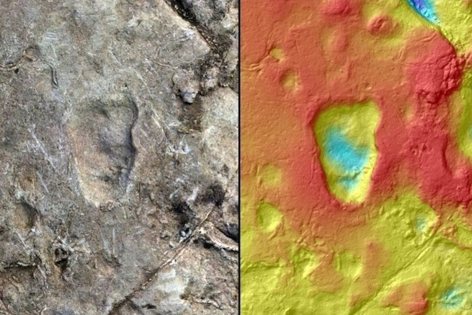
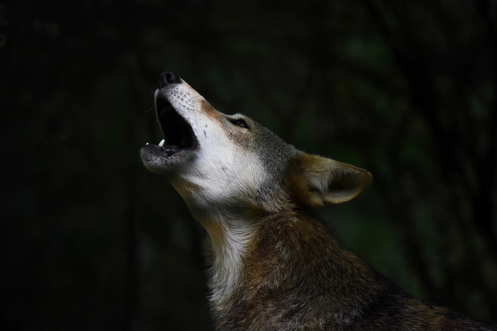
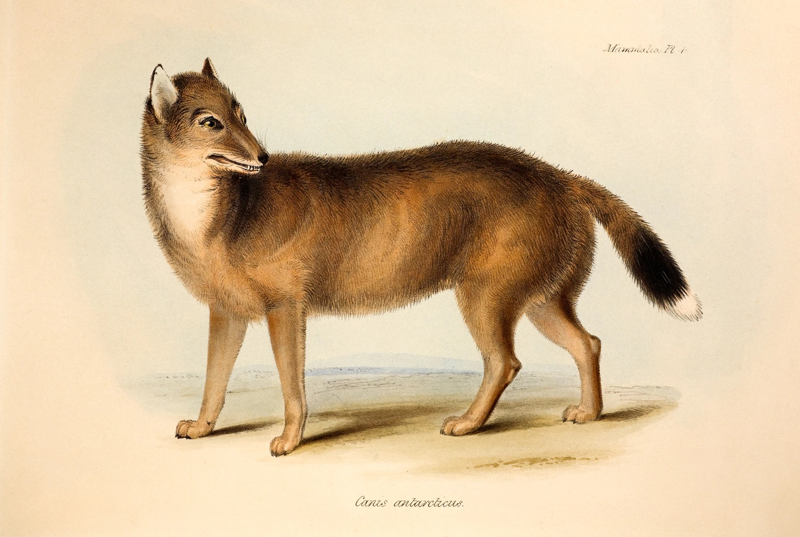
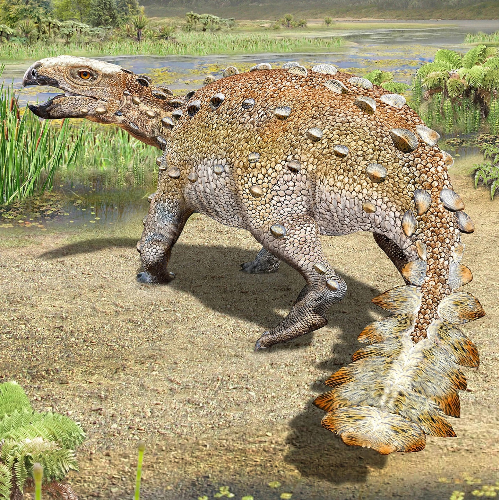

Today's Picks

Animals
How to keep red wolfs from going extinct a second time
Animals
Best National Geographic Animal Pics of 2021
Travel
How Christmas markets became a classic holiday tradition
Travel
Escape to the Past in These Vintage Photographs

Animals
New clues may explain the mysterious origins of the Falklands wolf

Animals
This bizarre armored dinosaur had a uniquely bladed tail weapon